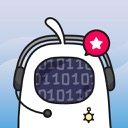

何玟叡 Wayne He
Android 資深高階工程師 · MVVM / Jetpack / Kotlin Multiplatform
擁有 6 年 Android 開發經驗，專注於以 MVVM 架構與 Jetpack 撰寫更高效、更穩定的應用程式， 近期投入行動裝置端的 AI 運算應用並取得發明專利，同時以 Kotlin Multiplatform 延伸跨平台開發。 期望為團隊帶來新的助力，推動 App 產品全面性的成長。
關於我
6 年 Android 開發經驗，具備以 Kotlin / Java 維護及開發專案的經驗， 目前專注於以 MVVM 架構 及 Jetpack 撰寫更高效的應用程式， 並以 Kotlin Multiplatform 實作可同時發佈到五個平台的跨平台專案， 喜歡透過參與研討會及聚會獲取技術新知。
善於針對 專案結構優化、記憶體使用優化 以及 協助產品擴展技術應用，不僅是個人的技術展現， 在團隊合作上也有十足的信心，為團隊成員帶來正向助益。
Android 開發技能
Jetpack
架構與測試
網路與資料
跨平台
影音與 AI
工具與監控
工作經歷
Android 資深高階工程師
專責 Android 開發，負責通信網路功能平台、加密通訊與防詐產品，並根據數據提出產品未來方向及優化。
- 行動裝置端的 AI 運算應用技術研究：主導以 Kotlin Multiplatform 驗證端側 AI 模型的落地可行性， 成果轉為原生產品「防詐隊長」（2026.07 上線）
- 研究成果取得中華民國發明專利（第一發明人，證書號 I904976）
- 開發通信防護應用技術，產品通過行動應用 App 基本資安標章（MAS 標章）
- 引入 MVVM 及單元測試，以提升專案穩定性
- 建構開發流程及自動化佈署工作
- 整理研討會及技術新知，促進內部技術交流
Android Engineer
負責開發公司商業化部門的 App 產品，以 MVVM 架構搭配 DI 套件建構，並串接廣告 SDK 獲取收益。
- 獨立開發訊息備份工具並上架
- 維護各個 App 的廣告系統
- 維護各個 App 的未崩潰率超過 99%
- 研究競品 App 的功能
Android 工程師
負責開發電商 App 平台，主要與香港開發團隊遠端合作。
- 透過 UI 元件模組化提升程式碼複用比例
- 翻新 Google Analytics 埋點模組及埋點位置
- 使用 ExoPlayer 為產品新增影片播放功能
- 基於前端商業邏輯部署，實作推薦商品給用戶的功能
Android 工程師
負責開發 Android TV 平台 App，協助與客戶溝通需求及釋疑的工作。
- 透過 log、ANR、tombstone 除錯 App 問題
- 協助裝置通過 Google 官方 CTS 相關認證
專利與認證
利用人工智慧防詐之使用者裝置、方法及電腦可讀媒介
以端側 AI 模型解析裝置上的推播通知，判定詐騙訊息後告警並移除高風險通知； 分析結果回傳優化後再更新裝置端模型。此專利即「防詐隊長」的核心技術。
行動應用 App 基本資安標章（MAS 標章）
依 MAS 基本資安規範完成檢測並取得標章。
Google CTS 相容性測試
協助裝置通過 Google 官方 CTS 相關認證。
專案經歷

防詐隊長CHT Security 中華資安國際
協助使用者識別詐騙資訊，並在 Android 端直接阻擋詐騙訊息的防護 App
- 與主管共同架構產品功能藍圖，並負責 Android 端開發至 2026 年 7 月上線
- 產品前身是我主導的技術驗證專案：以 Kotlin Multiplatform 驗證「前端整併端側 AI 模型」的可行性， 實測確認 KMP 具備承載落地模型的能力，成為本產品成立的技術前提；後續配合產品轉型，改以原生 Android 重新實作
- AI 模型由公司其他單位開發，我負責前端通知偵測服務： 取得通知內容交由落地模型在手機上運算，訊息不離開裝置，同時兼顧資料安全與判讀效率
- 不只提醒，更能主動處置 —— 偵測到異常通知內容時直接移除該則通知， 從源頭降低使用者接觸詐騙的可能性
- 主動防禦覆蓋 SMS、LINE、Messenger，於背景自動偵測，使用者無須手動複製貼上
- AI 偵查員：一鍵貼上可疑訊息或網址即時分析潛在風險
- 使用者可回報風險判定（高／低風險），回饋用於後續模型優化
- 核心技術取得中華民國發明專利 I904976（第一發明人）
截圖取自 Google Play 商店頁公開素材。
中華網安助手
CHT Security 中華資安國際
提供用戶操作付費通信網路功能的平台
- 以 Kotlin 重構專案
- 引入單元測試，商業邏輯覆蓋率超過 80%
- 優化記憶體使用，峰值降低 50%
- 引入 LeakCanary、Crashlytics 追蹤線上狀況
- 透過數據分析提出優化重構及新功能
- 通過行動應用 App 基本資安標章（MAS 標章）
截圖取自 Google Play 商店頁公開素材。
CypherCom
CHT Security 中華資安國際
提供特殊加密的通訊平台
- 以 Kotlin 重構專案
- 引入單元測試
- 引入 Crashlytics 追蹤上線狀況
截圖取自 Google Play 商店頁公開素材。
Animated Sticker Maker for WA
立應科技有限公司
動態貼圖瀏覽與自製貼圖工具
- App 以 OpenCV 進行影像去背、WebP 編碼輸出符合 WhatsApp 規範的動態貼圖，並串接 GIPHY SDK 提供內容搜尋
- 負責功能維護與版本更新
- 維護廣告 SDK 串接，維持產品變現
- 維持 App 的未崩潰率達 99% 以上
截圖取自 Google Play 商店頁公開素材。
WA message recover-backup
立應科技有限公司
提供備份通訊軟體內容的功能
- 上架三個月後，達到百萬下載量
- 維持 App 的未崩潰率達 99% 以上
- 透過數據平台分析，調整需求及功能
- 加入遠端通知及本地偵測通知功能
- 新增多媒體資源備份功能
App 已下架，截圖為本機重新建置後以測試訊息操作產生，非真實對話內容。
HKTVmall
英屬維京群島商易創投有限公司
香港最大線上購物平台的 Android App
- 與香港開發團隊遠端協作，負責 Android 端功能開發
- 透過 UI 元件模組化提升程式碼複用比例
- 以 ExoPlayer 為產品新增影片播放功能
- 翻新 Google Analytics 埋點模組與埋點位置
- 基於前端商業邏輯部署，實作推薦商品給用戶的功能
截圖取自 Google Play 商店頁公開素材。
個人專案
利用工作之外的時間開發、目前仍持續維護的專案。善用 AI 帶來的生產力紅利，把腦中的想法快速做成真正能上線、能長期運作的產品，同時實驗跨平台技術與自動化流程。
KaHe 卡盒
集換式卡牌遊戲的牌組建構與卡池瀏覽工具
截圖中的卡面為自製合成圖，非官方卡圖 — 避免公開展示時觸及卡牌原廠的智財權。
- 單一 Kotlin 程式庫共用 UI 與商業邏輯，同時發佈到五個平台
- 資料層以通用卡片模型設計，可擴充支援不同卡牌遊戲；目前內建 Weiß Schwarz 與排球少年 TCG
- 離線優先的卡片資料 bundle 機制，處理各平台資源載入差異；卡表以差異更新（delta）方式 OTA 派送
- 建置卡片翻譯流程，累積譯出數千張卡片文字
- 開發方式：由我主導架構設計、跨平台技術選型與逐項驗收，並以 AI 作為實作的加速器 — 讓一個人也能把想法完整實現成五平台可發佈的產品
Card Radar
卡牌商品到貨監控與通知系統
- 以 GitHub Actions 排程定時爬取 8 家日本卡牌商店的在庫與價格，無需自架伺服器
- 抓取或解析異常時保留前一次基準，避免誤判大量下架而發出錯誤通知
- 偵測到新品即透過 Telegram Bot 推播
- 資料同步至 Cloud Firestore，並提供 React 儀表板；以 Google 登入搭配 Firestore Rules 控管存取
- 開發方式：爬蟲與通知邏輯由我設計，日常修補與重構交由 AI 以 PR 形式提出、我審查後合併 — 用 AI 把工餘的想法維持成長期穩定運作的服務
儀表板需授權的 Google 帳號才能讀取監控資料，連結僅供查看登入頁。